컴퓨터응용가공산업기사 (2015-05-31 기출문제)
1과목: 기계가공법 및 안전관리
1. 절삭공구를 연삭하는 공구연삭기의 종류가 아닌 것은?
- 센터리스 연삭기
- 초경공구 연삭기
- 드릴 연삭기
- 만능공구 연삭기
(정답률: 73%)

2. 일반적으로 방전가공 작업시 사용되는 가공액의 종류 중 가장 거리가 먼 것은?
- 변압기유
- 경유
- 등유
- 휘발유
(정답률: 81%)
3. 절삭제의 사용 목적과 거리가 먼 것은?
- 공구의 온도상승 저하
- 가공물의 정밀도 저하 방지
- 공구 수명 연장
- 절삭 저항의 증가
(정답률: 92%)
4. 척에 고정할 수 없으며, 불규칙하거나 대형 또는 복잡한 가공물을 고정할 때 사용하는 선반 부속품은?
- 면판(Face Plate)
- 맨드릴(mandrel)
- 방진구(work rest)
- 돌리개(dog)
(정답률: 71%)
5. 탁상 연삭기 덮개의 노출각도에서, 숫돌 주축 수평면 위로 이루는 원주의 최대 각은?
- 45°
- 65°
- 90°
- 120°
(정답률: 49%)
6. 선반의 주축을 중공축으로 한 이유로 틀린 것은?
- 굽힘과 비틀림 응력의 강화를 위하여
- 긴 가공물 고정이 편리하게 하기 위하여
- 지름이 큰 재료의 테이퍼를 깎기 위하여
- 무게를 감소하여 베어링에 작용하는 하중을 줄이기 위하여
(정답률: 55%)
7. 연삭숫돌의 원통도 불량에 대한 주된 원인과 대책으로 옳게 짝지어진 것은?
- 연삭숫돌의 눈 메움 : 연삭숫돌의 교체
- 연삭숫돌의 흔들림 : 센터 구멍의 홈 조정
- 연삭숫돌의 입도가 거침 : 굵은 입도의 연삭숫돌 사용
- 테이블 운동의 정도 불량 : 정도검사, 수리, 미끄럼면의 윤활을 양호하게 할 것.
(정답률: 72%)
8. 선반가공에서 ø100×400인 SM45C 소재를 절삭 깊이 3mm,이송속도를 0.2mm/rev, 주축회전수를 400rpm으로 1회 가공할 때, 가공 소요시간은 약 몇 분인가?
- 2
- 3
- 5
- 7
(정답률: 53%)
9. 호브(Hob)를 사용하여 기어를 절삭하는 기계로써, 차동기구를 갖고 있는 공작기계는?
- 레이디얼 드릴링 머신
- 호닝 머신
- 자동 선반
- 호빙 머신
(정답률: 82%)
10. 사인바(Sine Bar)의 호칭치수는 무엇으로 표시하는가?
- 롤러 사이의 중심거리
- 사인 바의 전장
- 사인 바의 중량
- 롤러의 직경
(정답률: 74%)
11. 기계가공법에서 리밍 작업시 가장 옳은 방법은?
- 드릴 작업과 같은 속도와 이송으로 한다.
- 드릴 작업보다 고속에서 작업하고 이송을 작게한다.
- 드릴 작업보다 저속에서 작업하고 이송을 크게한다.
- 드릴 작업보다 이송만 작게하고 같은 속도로 작업한다.
(정답률: 62%)
12. 절삭 날 부분을 특정한 형상으로 만들어 복잡한 면을 갖는 공작물의 표면을 한 번에 가공하는데 적합한 밀링 커터는?
- 총형 커터
- 엔드 밀
- 앵귤러 커터
- 플레인 커터
(정답률: 69%)
13. 수공구를 사용할 때 안전수칙 중 거리가 먼 것은?
- 스패너를 너트에 완전히 끼워서 뒤쪽으로 민다.
- 멍키렌치는 아래턱(이동 jow)방향으로 돌린다.
- 스패너를 연결하거나 파이프를 끼워서 사용하면 안 된다.
- 멍키렌치는 웜과 랙의 마모에 유의하고 물림상태 확인 후 사용한다.
(정답률: 62%)
14. 일반적으로 직경(외경)을 측정하는 공구로써 가장 거리가 먼 것은?
- 강철자
- 그루브 마이크로 미터
- 버니어 캘리퍼스
- 지시 마이크로미터
(정답률: 73%)
15. 견고하고 금긋기에 적당하며, 비교적 대형으로 영점 조정이 불가능한 하이트 게이지로 옳은 것은?
- HT형
- HB형
- HM형
- HC형
(정답률: 60%)
16. 마찰면이 넓은 부분 또는 시동횟수가 많을 때 사용하고 저속 및 중속 축의 급유에 사용되는 급유방법은?
- 담금 급유법
- 패드 급유법
- 적하 급유법
- 강제 급유법
(정답률: 64%)
17. 다음 센터 구멍의 종류로 옳은 것은?
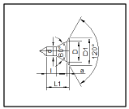
- A형
- B형
- C형
- D형
(정답률: 63%)
18. 다음과 같이 표시된 연삭숫돌에 대한 설명으로 옳은 것은?
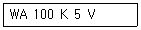
- 녹색 탄화규소 입자이다.
- 고운눈 입도에 해당된다.
- 결합도가 극히 경하다.
- 메탈 결합제를 사용했다.
(정답률: 61%)
19. 비교 측정에 사용되는 측정기가 아닌 것은?
- 다이얼 게이지
- 버니어 캘리퍼스
- 공기 마이크로미터
- 전기 마이크로미터
(정답률: 78%)
20. 밀링 머신에서 절삭속도 20m/min, 페이스커터의 날수 8개, 직경 120mm, 1날당 이송 0.2mm일 때 테이블 이송속도는?
- 약 65mm/mim
- 약 75mm/min
- 약 85mm/min
- 약 95mm/min
(정답률: 61%)
2과목: 기계설계 및 기계재료
21. 뜨임의 목적이 아닌 것은?
- 탄화물의 고용강화
- 인성부여
- 담금질 할 때 생긴 내부응력 감소
- 내마모성의 향상
(정답률: 58%)
22. 전연성이 좋고 색깔이 아름다우므로 장식용 악기 등에 사용되는 5~20% Zn이 첨가된 구리합금은?
- 톰백(tombac)
- 백동
- 6-4황동(muntz metal)
- 7-3황동(cartridge brass)
(정답률: 82%)
23. 풀림의 목적을 설명한 것 중 틀린 것은?
- 강의 경도가 낮아져서 연화된다.
- 담금질된 강의 취성을 부여한다.
- 조직이 균일화, 미세화, 표준화 된다.
- 가스 및 불순물의 방출과 확산을 일으키고, 내부응력을 저하시킨다.
(정답률: 61%)
24. 탄소강의 상태도에서 공정점에 발생하는 조직은?
- Pearlite, cementite
- Cementite, Austenite
- Ferrite, Cementite
- Austenite, Pearlite
(정답률: 61%)
25. 어떤 종류의 금속이나 합금을 절대영도 가까이 냉각하였을 때, 전기저항이 완전히 소멸되어 전류가 감소하지 않는 상태는?
- 초소성
- 초전도
- 감수성
- 고상접합
(정답률: 82%)
26. 담금질한 강을 재가열할 때 600°C 부근에서의 조직은?
- 솔바이트
- 마텐자이트
- 투루스타이트
- 오스테나이트
(정답률: 43%)
27. 주철 용해용 고주파 유도 용해로(전기로)의 크기 표시는?
- 매 시간당 용해톤(ton)수
- 1일 총 용해 톤(ton)수
- 1회 최대 용해톤(ton)수
- 8시간 조업 용해톤(ton) 수
(정답률: 61%)
28. 18-8형 스테인리스강의 설명으로 틀린 것은?
- 담금질에 의하여 경화되지 않는다.
- 1000°C~1100°C로 가열하여 급랭하면 가공성 및 내식성이 증가된다.
- 고온으로부터 급랭한 것을 500°C~850°C로 재가열하면 탄화크롬이 석출된다.
- 상온에서는 자성을 갖는다.
(정답률: 64%)
29. 용광로의 용량으로 옳은 것은?
- 1회 선철의 총 생산량
- 10시간 선철의 총 생산량
- 1일 선철의 총 생산량
- 1개월 선철의 총 생산량
(정답률: 66%)
30. 내열용 알미늄 합금이 아닌 것은?
- Y합금
- 로엑스(Lo-Ex)
- 듀랄루민
- 코비탈륨
(정답률: 49%)
31. 너클 핀 이음에서 인장력이 50kN인 핀의 허용전단응력을 50MPa이라고 할 때, 핀의 지름 d는 몇 mm 인가?
- 22.8
- 25.2
- 28.2
- 35.7
(정답률: 41%)
32. 어떤 축이 굽힘모멘트 M과 비틀림 모멘트 T를 동시에 받고 있을 때, 최대 주응력설에 의한 상당 굽힘 모멘트 Me는?
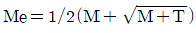
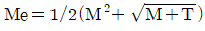
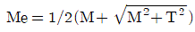
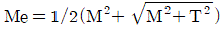
(정답률: 60%)
33. 스프링의 자유높이 H와 코일의 평균지름 D의 비를 무엇이라 하는가?
- 스프링 지수
- 스프링 변위량
- 스프링 상수
- 스프링 종횡비
(정답률: 57%)
34. 축간 거리 55cm인 평행한 두 축 사이에 회전을 전달하는 한 쌍의 스퍼기에서 피니언이 124회전할 때, 기어를 96회전시키려면 피니언의 피치원 지름은?
- 48cm
- 62cm
- 96cm
- 124cm
(정답률: 30%)
35. 자전거의 래칫휠에 사용되는 클러치는?
- 맞물림 클러치
- 마찰 클러치
- 일방향 클러치
- 원심 클러치
(정답률: 63%)
36. 보통운전으로 회전수 300rpm, 베어링 하중 110N을 받는 단열 레디얼 볼 베어링의 기본 동 정격하중은? (단, 수명은 6만 시간이고, 하중계수는 1.5이다)
- 1693N
- 169.3N
- 1650N
- 165.0N
(정답률: 34%)
37. 다음 나사산의 각도 중 틀린 것은?
- 미터보통나사 60°
- 관용평행나사 55°
- 유니파이 보통나사 60°
- 미터사다리꼴 나사 35°
(정답률: 73%)
38. 1줄 리벳 겹치기 이음에서 간판의 효율(η1)을 나타내는 식은? (단, p:리벳의 피치, d=리벳구멍의 지름, t=강판의 두께, σt=강판의 인장응력이다.)
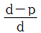
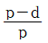
- ptσt
- (p-d)tσt
(정답률: 63%)
39. 각속도가 30rad/sec인 원운동을 rpm 단위로 환산하면 얼마인가?
- 157.1 rpm
- 186.5 rpm
- 257.1 rpm
- 286.5 rpm
(정답률: 23%)
40. V벨트의 사다리꼴 단면의 각도(θ)는 몇 도인가?
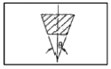
- 30°
- 35°
- 40°
- 45°
(정답률: 67%)
3과목: 컴퓨터응용가공
41. NC프로그래밍 전에 부품도면을 바탕으로 세우는 가공계획과 거리가 먼 것은?
- 위치 검출 방법의 선정
- 가공순서 및 공구의 선정
- 사용해야 할 NC 공작기계의 선정
- 가공물의 고정방법 및 치공구의 선정
(정답률: 54%)
42. CPU 내에서 자료를 처리할 때 발생하는 자료 이동의 병목 현상을 감소시키기 위한 것은?
- Instruction Set
- Cache memory
- Coprocessor
- BIOS
(정답률: 74%)
43. 기하학적 변환 중에서 변환 전의 거리와 비교할 때 변환이 수행된 후에 물체상에 위치한 특정 두 점간의 거리가 달라질 수 있는 변환은?
- 이동변환( Translation)
- 회전변환(rotation)
- 크기 변환(Scaling )
- 반사 변환(Reflection)
(정답률: 55%)
44. 일반적인 FMS(Flexible Manufacturing System)의 장점으로 보기 어려운 것은?
- 인건비를 절감할 수 있다.
- 재고 관리와 제어가 용이하다.
- 단품종 대량생산에 적합하다.
- 공정변화에 대한 유연한 대처가 용이하다.
(정답률: 73%)
45. 네 점p0, p1, p2, p3를 조정점으로 하는 3차 Bezier곡선의 p3에서의 접선벡터를 조정점의 함수로 표현하면?
- P1+2P2+P3
- 3P3-3P2
- P1-2P2+P3
- 3P2-3P3
(정답률: 44%)
46. 서피스 모델의 특징으로 가장 거리가 먼 것은?
- 은선 제거가 가능하다.
- NC가공 정보를 얻을 수 있다.
- 2개 면의 교선을 구할 수 있다.
- 체적,관성모멘트 등 물리적 성질을 계산하기가 용이하다.
(정답률: 79%)
47. 4개의 모서리 점과 4개의 경계곡선을 부드럽게 연결한 곡면으로, 곡면의 표현이 간결하여 예전에는 널리 사용하였으나 곡면내부의 볼록한 정도를 직접 조절하기가 어려워 정밀한 곡면 표현에는 적합하지 않은 것은?
- 베지어 곡면
- 스플라인 곡면
- 쿤스 곡면
- B-spline 곡면
(정답률: 75%)
48. NURBS(Non Uniform Rational B-spline)곡선의 특징으로 거리가 먼 것은?
- 4개의 좌표의 조종점 사용으로 곡선의 변형이 자유롭다.
- 모든 조종점을 지나는 부드러운 곡선이다.
- 원추곡선의 정확한 표현이 가능하다.
- NURBS곡선으로 B-spline, Bezier 곡선도 표현할 수 있다.
(정답률: 52%)
49. 서로 다른 CAD/CAM 시스템 간의 형상 데이터 교환을 위해서 만들어진 중립파일(Neutral file)에 해당하는 것은?
- IGES
- HTML
- HWP
(정답률: 81%)
50. 음영기법(Shdaing)방법에는 여러 가지가 있는데, 다음 보기 중 가장 현실감이 뛰어난 음영기법은?
- 퐁(phong)음영기법
- 평활(smooth)음영기법
- 단면별(faceted)음영기법
- 구로드(gouraud)음영기법
(정답률: 58%)
51. 은선 제거(hidden surface removal)가 가능하지 않은 모델은?
- Wireframe model
- Surface model
- B-rep model
- CGS model
(정답률: 83%)
52. CL Data를 이용하여 CNC공작기계의 제어부에 맞게 NC Data를 생성하는 과정을 무엇이라 하는가?
- 후 처리
- 공구경로 검증
- CL Data 생성
- 데이터 베이스(Database)
(정답률: 50%)
53. 광원으로부터 나오는 광선이 직접 또는 반사 및 굴절을 거쳐 화면에 도달하는 경로를 역 추적하여 화면을 구성하는 각 화소의 빛의 강도와 색깔을 결정하는 렌더링 방법은?
- 광선 투사(ray tracing)법
- Z-버퍼 방법
- 화가 알고리즘(painter's algorithm)방법
- 후향면 제거(back-face culling)방법
(정답률: 80%)
54. VDI라는 이름으로 시작된 하드웨어 기준의 표준으로, 그래픽 기능과 하드웨어 간에 공유되어 하드웨어를 제어할 수 있는 표준규격은?
- GKS
- CGI
- CGM
- IGES
(정답률: 48%)
55. CNC공작기계에 대한 설명 중 틀린 것은?
- CNC컨트롤러는 기계를 제어하기 위한 특수목적의 컴퓨터로 볼 수 있다.
- 1세대 NC 공작기계는 NC프로그램을 저장할 메모리가 없다.
- CNC공작기계의 두뇌라고 할 수 있는 기계제어 장치(MCU)는 데이터처리장치(DPU)와 제어루프장치(CLU)로 구성된다.
- CNC 공작기계의 데이터 처리장치는 축의 위치, 속도 등을 제어한다.
(정답률: 38%)
56. NC기계의 DNC통신에서 병렬포트가 아니라 직렬포트를 쓰는 이유에 대한 설명 중 가장 거리가 먼 것은?
- 통신속도가 빠르다.
- 데이터 손실이 적다.
- 데이터를 주고 받을 수 있다.
- 잡음에 대한 성능이 우수하다.
(정답률: 55%)
57. 방정식 ax+by+c=0라는 식으로 표현 가능한 것은?
- 포물선
- 타원
- 직선
- 원
(정답률: 59%)
58. 자주 설계되는 홀(hole), 키 슬롯(key slot), 포켓(pocket)등을 라이브러리(library)에 미리 갖추어 놓고, 필요시 이들을 단품설계에 사용하는 모델링 방식은 무엇인가?
- parametric modeling
- Feature-based modeling
- Surface modeling
- Boolean operation
(정답률: 52%)
59. 3차원 솔리드 모델링을 구성하는 요소 중에서 프리미티브(primitive)라고 볼 수 없는 것은?
- 원기둥(cylinder)
- edge(엣지)
- 원뿔(cone)
- 구(sphere)
(정답률: 82%)
60. 솔리드 모델링의 B-rep 표현 중 루프(loop)라는 용어에 관한 설명으로 옳은 것은?
- 하나의 모서리를 두 개의 다른 방향의 모서리로 쪼개어 놓은 것
- 모든 면에 대하여 이들을 내부와 외부로 경계 짓는 모서리들이 연결된 닫혀진 회로(closed circuit)
- 면과 면이 연결되어 공간상에서 하나의 닫혀진 면의 고리를 이룬 것
- 면과 면이 연결되어 공간상에서 하나의 닫혀진 입체를 이룬 것
(정답률: 60%)
4과목: 기계제도 및 CNC공작법
61. 도면에서 다음 종류의 선이 같은 장소에 겹치게 될 경우 가장 우선순위가 높은 것은?
- 중심선
- 무게 중심선
- 절단선
- 치수 보조선
(정답률: 72%)
62. 나사의 표시가 다음과 같이 명기되었을 때 이에 대한 설명으로 틀린 것은?
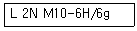
- 나사의 감김 방향은 오른쪽이다.
- 나사의 종류는 미터나사이다.
- 암나사 등급은 6H, 수나사 등급은 6g이다.
- 2줄 나사이며 나사의 바깥지름은 10mm이다.
(정답률: 78%)
63. 스케치도에 관한 설명으로 틀린 것은?
- 측정한 치수를 기입한다.
- 프리핸드로 그린다.
- 재질 및 가공법은 기입할 필요가 없다.
- 제작도로 대신 사용하기도 한다.
(정답률: 70%)
64. 다음 도면에서 기하공차에 관한 설명으로 가장 적합한 것은?
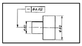
- ø20부분만 원통도가 ø0.01범위 내에 있어야 한다.
- ø20과 ø40부분의 원통도가 ø0.02범위 내에 있어야 한다.
- ø20과 ø40부분의 진직도가 ø0.02범위 내에 있어야 한다.
- ø20부분만 진직도가 ø0.02범위 내에 있어야 한다.
(정답률: 65%)
65. 다음 중 표면의 결을 도시할 때 제거가공을 허용하지 않는다는 것을 지시한 것은?
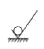
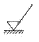
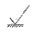
(정답률: 77%)
66. 제 3각법 투상법으로 제도한 보기의 평면도와 좌측면도에 가장 적합한 정면도는?
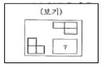
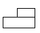
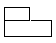
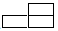
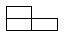
(정답률: 75%)
67. 가공 방법에 따른 KS 가공방법 기호가 바르게 연결된 것은?
- 방전가공: SPED
- 전해가공: SPU
- 전해 연삭: SPEC
- 초음파 가공: SPLB
(정답률: 60%)
68. 핸들이나 바퀴 등의 암 및 림, 리브 등 절단선의 연장선 위에 90° 화전하여 실선으로 그리는 단면도는?
- 온 단면도
- 한쪽 단면도
- 조합 단면도
- 회전도시 단면도
(정답률: 81%)
69. 끼워맞춤 공차 ø50H7/g6에 대한 설명으로 틀린 것은?
- ø50H7의 구멍과 ø50g6축의 끼워맞춤이다.
- 축과 구멍의 호칭 치수는 모두 ø50이다.
- 구멍 기준식 끼워 맞춤이다.
- 중간 끼워 맞춤의 형태이다.
(정답률: 70%)
70. 도면에 굵은 선의 굵기를 0.5mm로 하였다. 가는 선과 아주 굵은 선의 굵기로 가장 적합한 것은? (순서대로 가는 선 - 아주 굵은 선)
- 0.18mm - 0.7mm
- 0.25mm - 1mm
- 0.35mm - 0.7mm
- 0.35mm - 1mm
(정답률: 65%)
71. CNC 선반에서 바이트의 날끝(nose)반경을 R, 이송을 f라 하면 가공면의 이론적인 최대 높이(Hmax)를 표시하는 식은?
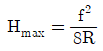
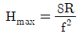
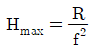
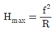
(정답률: 57%)
72. CNC공작기계에서 각 축의 이송 정밀도를 높이기 위하여 사용하는 나사는?
- 삼각나사
- 사각 나사
- 둥근나사
- 볼 나사
(정답률: 81%)
73. 원점 복귀와 관련된 준비기능에서 기계 원점으로 자동 복귀하는 기능은?
- G27
- G28
- G29
- G30
(정답률: 79%)
74. CNC선반 가공 중 내경 완성치수 ø30.0부위를 측정시, 공구마멸의 원인으로 ø29.4로 나타났을 때, 해당공구의 공구 보정값은? (단, 현재의 공구보정값은 x=3.2, Z=6.0이다)
- X=3.5, Z=6.0
- X=3.5, Z=6.6
- X=3.8, Z=6.0
- X=3.8, Z=6.6
(정답률: 58%)
75. CNC방전 가공에서 안전대책이 아닌 것은?
- 적절한 접지공사를 한다.
- 가공액은 지정된 가공액을 사용한다.
- 장시간 무인운전을 원칙적으로 피한다.
- 운전 중 전극을 만져 간격을 조절한다.
(정답률: 88%)
76. 다음 머시닝센터 프로그램에서 고정사이클의 기능 중 G98의 의미는?
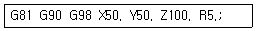
- R 원점 복귀
- 초기점 복귀
- 절대지령
- 증분지령
(정답률: 64%)
77. 머시닝센터에서 M8×1.25인 암나사를 탭핑 사이클로 가공하고자 할 때, 주축의 이송속도는? (단, 주축스핀들은 600rpm으로 지령 되어 있다.)
- 125mm/min
- 750mm/min
- 1000mm/min
- 1250mm/min
(정답률: 67%)
78. CNC와이어 컷 방전가공에서 방전 갭 50㎛, 와이어 직경 0.2mm일 때 보정량은 얼마인가?
- 0.12mm
- 0.13mm
- 0.14mm
- 0.15mm
(정답률: 48%)
79. CNC선반 작업시 공구가 받는 절삭저항이 가장 큰 것은?
- 주분력
- 배분력
- 이송분력
- 회전분력
(정답률: 81%)
80. 고정밀도로 제어하는 방식으로 가격이 고가이며 그림과 같은 서보기구는?
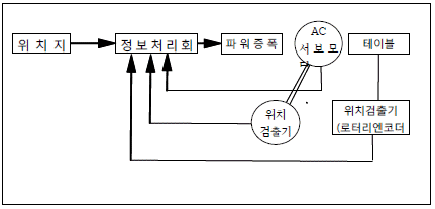
- 하이브리드 서보 방식
- 반폐쇄회로 방식
- 개방회로 방식
- 폐쇄회로 방식
(정답률: 60%)